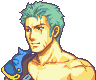

Support Rank C

ちょっといいかな？Got a moment?

なにかご用ですか？ クレイン将軍Need something, General Klein?
ディーク・・・まさか
ぼくが分からないのか？Dieck... don't tell me you don't recognize me?
・・・驚いたな
覚えているとは思わなかった...Well, I'm surprised. I didn't think you'd remember me.
！ ひと目でわかったよI knew you the moment I saw you!
ディークの方は 気づいていないようだから
声をかけてみたというのに・・・And here I thought I'd try calling out to you since you didn't seem to notice me...
１３年か・・・あのクレインぼっちゃんが
こんなに大きくなったわけだThirteen years, huh... so that little Master Klein grew up into this.
「ぼっちゃん」は やめてほしいな
今年で もう１９になったんだよI wish you'd stop with the "little master." I'm already nineteen this year.
国王陛下から一部隊をおあずかりし
将軍としての軍務もはたしているんだHis Majesty entrusted me with a unit of my own. I'm carrying out my duties as a general now.
ああ知っている 立派になったな
・・・パント様と夫人は お元気か？Yeah, I know. You've really grown into something... How are Lord Pent and his wife doing?
ああ 父上も母上も
相変わらず のんびりされているよOh, Father and Mother are just as easygoing as ever.
クーデターがおきたというのに 万事
自分たちのペースを崩されないEven with a coup going on, nothing throws them off their own pace.
息子のぼくから見ても 時々
感心してしまうほどにねEven as their son, I sometimes find myself impressed by it.
そういう おまえも
かなり感心する部類だと思うんだがI'd say you're pretty impressive yourself, for what it's worth.
何？ どういう意味だい？What? What do you mean by that?
いや まぁ
今度また ゆっくりなNo, well — some other time, when we've got more time.
ディーク！
せっかく また会えたのに・・・Dieck! And here we finally got to meet again...
Support Rank B
クレイン！
危ないから あまり前にでてくるなKlein! It's dangerous, don't come out so far ahead!
ここぐらいなら平気だThis much is fine.
いや おまえたち弓兵は
おれたちの後方から敵を狙えばいいNo — you archers should be aiming at the enemy from behind us.
わざわざ自分の身を
危険にさらすようなことはするなThere's no need to go putting yourself in danger.
ディーク ぼくは
もう子供じゃないと言っているだろう？Dieck, I keep telling you — I'm not a child anymore.
これまでだって一軍を指揮し
ずっと最前線で 戦ってきたんだI've commanded my own army and fought on the front lines all this time.
悪いが 今でもおれにとっては
小さい「クレインぼっちゃん」だSorry, but to me you're still that little "Master Klein."
おれがいて おまえに傷を
負わすようなことがあったらIf I'm around and something happens that leaves a scar on you,
パント様たちに顔向けができないI wouldn't be able to face Lord Pent and the others.
・・・そんなに気にかけてくれるのなら
館に戻ってくれればいいのに...If you care about it that much, I wish you'd just come back to the manor.
そうだ この戦いが終わったら
いっしょに帰らないか？That's it — once this battle's over, why don't we go back together?
父上たちもきっと喜んで・・・Father and the others would surely be happy...
クレイン
おまえの気持ちだけ受け取っておくKlein, I'll just accept the feeling behind that.
だが 家のことを思うならば
おれのような剣闘士あがりなどとBut if you care about your family's standing, someone like me, a former gladiator,
気安く付き合うのは やめておけ
おまえの将来に傷がつくshouldn't be someone you casually associate with. Stop it — it'll hurt your future.
！？ そんな・・・What—? That's not...
こうして戦争のどさくさの間だけ
ってことにしとくんだ いいな？Let's just keep this to the middle of the chaos of war, understand?
・・・・・・......
Support Rank A
ディークDieck.
・・・クレイン この間言ったはずだぞ
あまり俺に近づくなと...Klein, I told you the other day not to get too close to me.
・・・話をしようと思って
こんな時だから 聞いてほしい...I wanted to talk. Since it's a time like this, I want you to listen.
・・・１５年も前の話だ
アクレイア一の闘技場で...This is a story from fifteen years ago now. At the greatest arena in Aquleia,
招待されていた貴族の子供が
余興用の獅子に襲われる事故があったthere was an accident where a noble's child, there as a guest, was attacked by a lion kept for entertainment.
・・・・・・......
貴族の子供を救ったのは
そこで評判の少年剣闘士だったThe one who saved the noble's child was a boy gladiator with a reputation there.
普段は 自分の倍はある屈強な大人を
なんなく倒していく少年だったけどNormally he was a boy who could easily beat grown men twice his size,
さすがに獅子が相手だ
無傷というわけにはいかなかったbut even he couldn't come away unscathed against a lion.
体中に無数の傷を受け
特に顔には 目立つ傷が４か所も残ったHe took countless wounds all over his body, and his face in particular was left with four noticeable scars.
・・・・・・......
貴族は 自分の息子の命を救った少年を
すぐに召しかかえたThe noble took the boy who'd saved his son's life into his household right away.
少年は数年の間 その家専属の
剣闘士として 闘技場で名をはせFor a few years, the boy made a name for himself in the arena as that family's exclusive gladiator,
そして ある日突然
自分の身柄を買い取るなり 出て行ったand then, one day, out of nowhere, he bought out his own contract and left.
少年を実の兄のように慕っていた子供は
裏切られたと思い とても悲しんだThe child who'd looked up to him like a real older brother thought he'd been betrayed, and was heartbroken.
・・・だけど 今なら分かる
それも ぼくたち家族を想って・・・だね？...But I understand now. That, too, was out of concern for us, for our family... wasn't it?
・・・おまえたち一家は
ただの使用人である おれに親切すぎた...Your family was far too kind to me, a mere servant.
周囲から忠告 中傷や嫌がらせを受けても
パント様も夫人も耳を貸そうとせずEven when warnings, slander, and harassment came from all around, Lord Pent and his wife wouldn't listen to any of it.
おれを息子同然に可愛がって下さった
・・・だから おれは離れたんだThey doted on me as good as a son... That's why I left.
・・・ディークの気持ちはよくわかった
だけど やっぱり納得はできない...I understand how you felt. But even so, I still can't accept it.
！？What—?
ディークは ぼくらのことばかり
心配してくれているようだけどYou seem to only worry about us, Dieck,
ぼくらだって どんなにディークを
心配しているか 考えてはくれないのか？but won't you think about how much we worry about you too?
会っても知らん顔するような関係
そんなのは 絶対に嫌だ・・・A relationship where we pretend not to know each other even when we meet — I absolutely hate that...
・・・どうやら 全部
おれの ひとりよがりだったようだ...It seems this was all just my own self-righteousness, after all.
！ では これからまた
家族同然に付き合っていけるね？Then — from now on, we can be like family again, right?
ああ 負けたよ
クレインぼっちゃんYeah. You win, Master Klein.
機会をみて パント様たちにも
顔見せにいくようにするI'll make a point to go pay my respects to Lord Pent and the others, when I get the chance.